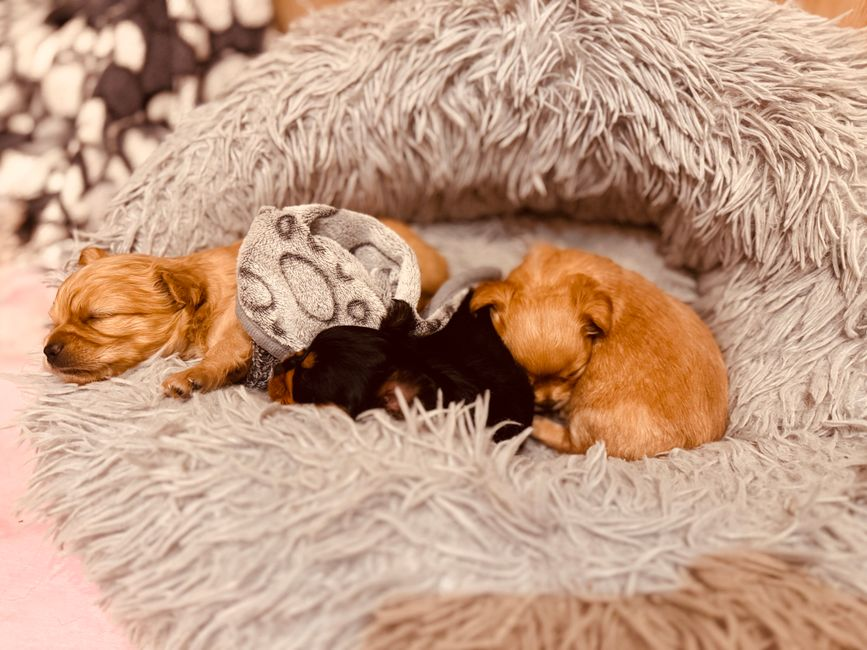

Managing and Preventing Anxiety Crises in Puppies

Photo: Kally Dru / Pexels
A new puppy faces a lot of unfamiliar things: a new home, smells, sounds and people. A little stress in the first days is normal. When anxiety is intense or lasts, it helps to recognize it and respond calmly. This article is general information and does not replace a veterinarian.
Signs of anxiety
- panting, drooling or trembling when it is not hot and the puppy has not exercised;
- hiding, avoiding contact, or following you everywhere;
- repeated barking, howling or whining;
- chewing objects or scratching doors;
- accidents in the house and loss of appetite.
Find the trigger
Common triggers are a move, being left alone, loud noises such as storms or fireworks, visitors and changes in routine. Note when the signs appear: knowing the time and the context helps you act where it matters.
Create a safe corner
Offer a quiet place with a bed, water and a toy where the puppy can retreat without being disturbed.
Keep a steady routine
Meals, walks and play at similar times give security. During the first days, limit visits and changes.
Help your puppy use up energy
Walks suited to its age and breed, play and puzzle toys tire the mind as well as the body.
Practice time alone, little by little
Start with very short absences and lengthen them slowly. Keep departures and returns calm. Some background noise, like a radio, helps some puppies.
What not to do
- do not scold or punish an anxious puppy: it increases fear;
- do not give any medication, supplement or calming product, including essential oils, without asking a veterinarian: some are harmful to dogs;
- do not force the puppy to face what scares it.
When to see the veterinarian
See the vet if the anxiety lasts more than a few days, if your puppy will not eat, hurts itself, becomes aggressive or destroys everything. Some health problems, such as pain, look like anxiety. A veterinarian or a behavior specialist can propose a plan suited to your puppy.
Recommended products
As an Amazon Associate, I earn from qualifying purchases.